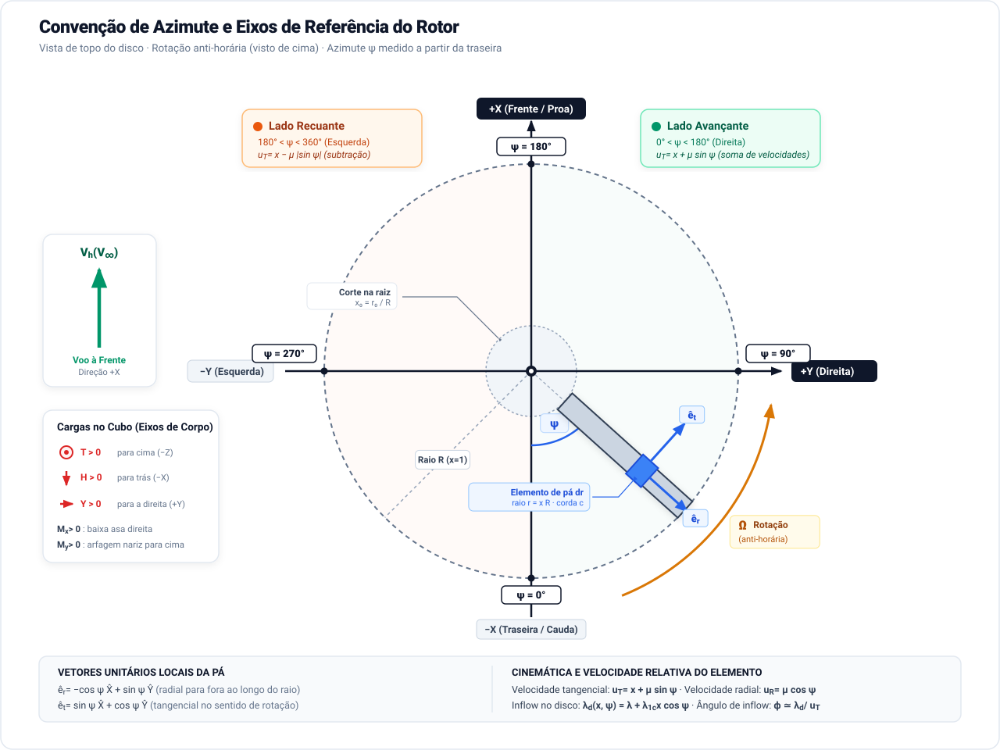

Sumário
- 1. Introdução
- 2. Hipóteses, eixos e referenciais
- 3. Geometria da pá, coordenadas radiais e solidez
- 4. Cinemática local e modelos de inflow
- 5. Aerodinâmica seccional e forças elementares
- 6. Coeficiente de Tração (\(C_T\)) e fechamento do inflow médio
- 7. Coeficiente de Força Longitudinal Induzida (\(C_{Hi}\))
- 8. Coeficiente de Força Longitudinal de Perfil (\(C_{H0}\))
- 9. Coeficiente de Força Longitudinal Total (\(C_H\))
- 10. Coeficiente de Força Lateral (\(C_Y\))
- 11. Coeficiente de Momento de Rolamento no Cubo (\(C_{Mx}\))
- 12. Coeficiente de Momento de Arfagem no Cubo (\(C_{My}\))
- 13. Coeficiente de Torque Induzido no Eixo (\(C_{Qi}\))
- 14. Coeficiente de Torque de Perfil no Eixo (\(C_{Q0}\))
- 15. Coeficiente de Torque Mecânico Total no Eixo (\(C_Q\))
- 16. Coeficiente de Potência Mecânica no Eixo (\(C_P\))
- 17. Coeficiente de Potência Aerodinâmica no Ar (\(C_{Pair}\))
- 18. Figura de Mérito (\(FM\)) e fator de potência induzida
- 19. Tabelas de síntese dos coeficientes aerodinâmicos
- 20. Limites de validade
- 21. Conclusão
- Referências
1. Introdução
O cálculo das cargas aerodinâmicas globais de um rotor em voo à frente requer integrar um campo de velocidades e ângulos de ataque fortemente assimétrico sobre o disco. Cada seção de pá experimenta variações periódicas de velocidade relativa, sustentação e arrasto ao longo do ciclo azimutal. O objetivo deste trabalho é fornecer ao engenheiro aeronáutico o conjunto completo de relações analíticas fechadas para todos os coeficientes aerodinâmicos de um rotor rígido: tração \(C_T\), forças longitudinais \(C_{Hi}\), \(C_{H0}\) e \(C_H\), força lateral \(C_Y\), momentos no cubo \(C_{Mx}\) e \(C_{My}\), torques de eixo \(C_{Qi}\), \(C_{Q0}\) e \(C_Q\), potência mecânica no eixo \(C_P\) e potência aerodinâmica no ar \(C_{Pair}\), estabelecendo com rigor matemático a sua derivação a partir de primeiros princípios (first principles).
A formulação combina a teoria de elemento de pá (BET) bidimensional com a teoria de quantidade de movimento (MT) para o fechamento do inflow induzido médio, incorporando gradientes espaciais de inflow longitudinal (\(K_x\)) e lateral (\(K_y\)) prescritos pelas formulações de Coleman–Feingold, NDARC e Drees [1], [2], [3], [4], [5]. O rotor considerado é rigidamente engastado ao cubo: não há articulações de batimento [6], avanço-recuo, conicidade prévia, deformações aeroelásticas ou comandos cíclicos de passo. Essa condição transfere integralmente as assimetrias aerodinâmicas em forças e momentos transmitidos ao mastro.
Diferentemente de compilações empíricas, adota-se aqui uma organização em dois conjuntos completos de tabelas mestras:
- Conjunto sob Hipótese de Inflow Constante: fornece soluções de referência para projeto conceitual e análise de sensibilidade rápida onde \(\lambda_d = \lambda\), evidenciando analiticamente por que \(C_Y = 0\) e \(C_{My} = 0\).
- Conjunto sob Hipótese de Inflow Não Constante: incorpora os gradientes \(K_x\) e \(K_y\) de forma totalmente expandida em todas as equações, capturando a assimetria real de carregamento, a força lateral \(C_Y\) e o momento de arfagem \(C_{My}\).
Para manter o rigor notacional e evitar qualquer sobreposição de variáveis, reserva-se estritamente \(x\) e \(y\) para os eixos espaciais do corpo (longitudinal e lateral, respectivamente), enquanto a posição radial ao longo da envergadura da pá é designada pela coordenada dimensional \(r\) e pela coordenada radial adimensional canônica \(\bar{r} = r/R\).
A partir da Seção 6, cada seção é dedicada a um único coeficiente aerodinâmico, apresentando sua formulação integral genérica e suas soluções totalmente expandidas sob torção linear, corte de raiz e passo uniforme. O texto segue rigorosamente a mesma sequência das tabelas mestras da Seção 19.
2. Hipóteses, eixos e referenciais
Sistema de eixos e convenção azimutal
Adota-se o sistema de eixos de corpo centrado no cubo do rotor, com \(+X\) direcionado para a frente da aeronave (longitudinal), \(+Y\) para a direita (lateral ou estibordo) e \(+Z\) para baixo (vertical). A tração positiva \(T>0\) atua para cima (em \(-Z\)). No plano do disco, a força aerodinâmica longitudinal \(H>0\) atua para trás (em \(-X\), opondo-se ao avanço), e a força lateral \(Y>0\) atua para a direita (em \(+Y\)).
O rotor possui \(N\) pás e gira com velocidade angular constante \(\Omega\) no sentido anti-horário quando observado de cima. O azimute \(\psi\) cresce no sentido de rotação a partir da cauda (\(\psi=0\) na posição traseira em \(-X\)). O lado direito do disco corresponde ao lado avançante (\(\psi=\pi/2\), em \(+Y\)), a proa corresponde a \(\psi=\pi\) (em \(+X\)), e o lado esquerdo corresponde ao lado recuante (\(\psi=3\pi/2\), em \(-Y\)).

Figura 1. Convenção de azimute adotada para o rotor em rotação anti-horária visto de cima: \(\psi=0^\circ\) na cauda, \(\psi=90^\circ\) à direita (lado avançante), \(\psi=180^\circ\) na proa e \(\psi=270^\circ\) à esquerda (lado recuante).
Os versores radial (\(\hat{\mathbf e}_r\), direcionado para fora ao longo da pá) e tangencial (\(\hat{\mathbf e}_t\), no sentido de rotação) são expressos nos eixos de corpo por:
\[ \hat{\mathbf e}_r=-\cos\psi\,\hat{\mathbf X}+\sin\psi\,\hat{\mathbf Y}, \qquad \hat{\mathbf e}_t=\sin\psi\,\hat{\mathbf X}+\cos\psi\,\hat{\mathbf Y}. \]
Os momentos seguem a regra da mão direita: \(M_x>0\) corresponde ao rolamento que baixa a asa direita (lado avançante), e \(M_y>0\) corresponde à arfagem de nariz para cima.
Cinemática de voo inclinado e decomposição de velocidades
Em voo de avanço sob velocidade não perturbada \(V_\infty\) e ângulo de ataque do rotor \(\alpha\) (definido como positivo quando o disco está inclinado para trás, com o bordo de ataque levantado em relação ao vento relativo):
\[ V_x = V_\infty \cos\alpha, \qquad V_z = -V_\infty \sin\alpha. \]
As razões de velocidade adimensionais normalizadas pela velocidade de ponta \(\Omega R\) são definidas por:
\[ \mu = \frac{V_x}{\Omega R}, \qquad \mu_z = \frac{V_z}{\Omega R} = -\mu\tan\alpha. \]
Quando o rotor opera com ângulo de ataque positivo (\(\alpha > 0\)), a componente axial externa é dirigida para cima (\(\mu_z < 0\)). Como o downwash induzido \(v_i\) empurra o ar para baixo através do disco (\(\lambda_i > 0\)), a velocidade axial externa opõe-se ao downwash:
\[ \lambda = \mu_z + \lambda_i = -\mu\tan\alpha + \lambda_i. \]
Essa redução do inflow total \(\lambda\) em \(\alpha > 0\) aumenta o ângulo de ataque efetivo das pás e eleva a tração gerada para um mesmo passo de pá.
Potência no eixo e potência aerodinâmica
O trabalho mecânico fornecido pelo eixo é
\[ P_{\mathrm{shaft}}=Q\Omega. \]
A potência aerodinâmica no ar será denotada por \(P_{\mathrm{air}}\) e calculada pelo balanço energético na Seção 17.
Normalização dos coeficientes
Os coeficientes aerodinâmicos usam a área do disco \(A=\pi R^2\) e a velocidade de ponta \(\Omega R\):
\[ C_T=\frac{T}{\rho A(\Omega R)^2},\qquad C_H=\frac{H}{\rho A(\Omega R)^2},\qquad C_Y=\frac{Y}{\rho A(\Omega R)^2}, \]
\[ C_{Mx}=\frac{M_x}{\rho A(\Omega R)^2R},\qquad C_{My}=\frac{M_y}{\rho A(\Omega R)^2R},\qquad C_Q=\frac{Q}{\rho A(\Omega R)^2R}. \]
Para potência,
\[ C_P = \frac{P_{\mathrm{shaft}}}{\rho A(\Omega R)^3} = C_Q, \]
e
\[ C_{Pair} = \frac{P_{\mathrm{air}}}{\rho A(\Omega R)^3}. \]
3. Geometria da pá, coordenadas radiais e solidez
Coordenada dimensional \(r\) e coordenada radial adimensional \(\bar{r}\)
O rotor possui raio \(R\), \(N\) pás idênticas e área de disco \(A=\pi R^2\). A distância física medida a partir do centro de rotação no cubo ao longo do eixo da pá girante é a coordenada dimensional \(r \in [r_0, R]\).
A coordenada radial adimensional canônica \(\bar{r}\) é definida por:
\[ \bar{r} = \frac{r}{R}, \qquad \bar{r} \in [\bar{r}_0, 1], \]
onde \(\bar{r}_0 = r_0/R\) define o corte da raiz aerodinâmica (root cutout), abaixo do qual a pá é composta pelo punho de fixação mecânica ao cubo e não produz sustentação.
Essa convenção reserva rigorosamente as letras \(x\) e \(y\) para as direções espaciais ortogonais de corpo: \(x\) na direção longitudinal do veículo e \(y\) na direção lateral de estibordo.
As integrais radiais canônicas que regem os momentos de área e de carregamento ao longo da envergadura são expressas por:
\[ J_n = \int_{\bar{r}_0}^1 \bar{r}^n\,d\bar{r} = \frac{1 - \bar{r}_0^{n+1}}{n+1}. \]
Distribuições de corda, solidez e torção
Para uma distribuição de corda \(c(\bar{r})\), a solidez seccional local é:
\[ \sigma(\bar{r}) = \frac{N c(\bar{r})}{\pi R}. \]
Para pás retangulares de corda constante \(c(\bar{r}) = c\), a solidez nominal de referência do rotor é:
\[ \sigma = \frac{N c}{\pi R}. \]
Solidez de referência e consistência das formulações simplificadas
A solidez geométrica de referência \(\sigma\) adotada no ensaio pode ser interpretada calculando-se a área da pá estendida até o centro de rotação (\(r = 0\)), \(A_{b,\mathrm{ref}} = N c R\), e dividindo-a pela área total do disco \(A = \pi R^2\):
\[ \sigma = \frac{A_{b,\mathrm{ref}}}{A} = \frac{N c R}{\pi R^2} = \frac{N c}{\pi R}. \]
Sob essa convenção, os termos redutores \((1 - \bar{r}_0^n)\) presentes nas formulações com corte de raiz atuam estritamente como correções geométricas da área e dos momentos de inércia da pá em relação à pá projetada. Consequentemente, as equações simplificadas sem corte (\(\bar{r}_0 = 0\)) possuem consistência física direta: elas expressam o comportamento analítico exato para a solidez de referência \(\sigma\), permitindo cálculos rápidos de ordem de grandeza e estimativas preliminares robustas antes da modelagem do raio do cubo e do mecanismo de fixação.
O passo geométrico seccional \(\theta(\bar{r})\) sob torção linear é expresso por:
\[ \theta(\bar{r}) = \theta_0 + \theta_t \bar{r}, \]
onde \(\theta_0\) é o passo coletivo no centro de rotação (\(\bar{r}=0\)) e \(\theta_t\) é a taxa total de torção linear da raiz à ponta (\(\theta_t < 0\) para washout aerodinâmico).
Para implementação computacional genérica, definem-se os momentos ponderados de solidez \(I_m\) e de torção \(T_m\):
\[ I_m = \int_{\bar{r}_0}^1 \sigma(\bar{r}) \bar{r}^m\,d\bar{r}, \qquad T_m = \int_{\bar{r}_0}^1 \sigma(\bar{r})\theta(\bar{r}) \bar{r}^m\,d\bar{r}. \]
Para pá retangular de solidez constante \(\sigma\), essas expressões reduzem-se a \(I_m = \sigma J_m\) e \(T_m = \sigma(\theta_0 J_m + \theta_t J_{m+1})\). A consistência das simplificações analíticas sem corte de raiz (\(\bar{r}_0 = 0\)) com a solidez de referência foi apresentada no callbox acima.
4. Cinemática local e modelos de inflow
Velocidades adimensionais no plano da pá
O escoamento incidente sobre uma seção de pá na posição radial \(\bar{r}\) e azimute \(\psi\) resulta da composição da rotação \(\Omega r = \Omega R \bar{r}\) com a velocidade de avanço \(V_x\). As velocidades locais adimensionais (normalizadas por \(\Omega R\)) no plano do disco são:
\[ \mathbf u_p = u_T\hat{\mathbf e}_t - u_R\hat{\mathbf e}_r, \]
com
\[ u_T = \bar{r} + \mu\sin\psi, \qquad u_R = \mu\cos\psi, \]
onde \(\mu\) é a razão de avanço longitudinal:
\[ \mu = \frac{V_x}{\Omega R}. \]
O módulo da velocidade relativa local no plano do rotor é:
\[ U_p = \sqrt{u_T^2 + u_R^2} = \sqrt{\bar{r}^2 + 2\mu \bar{r}\sin\psi + \mu^2}. \]
A projeção de \(\mathbf u_p\) no eixo longitudinal do corpo resulta em:
\[ \mathbf u_p \cdot \hat{\mathbf X} = u_T\sin\psi + u_R\cos\psi = \bar{r}\sin\psi + \mu. \]
Inflow axial médio e campo local bidimensional não uniforme
O escoamento axial total através do rotor decompõe-se na componente externa \(V_z\) e na velocidade induzida média \(v_i\) gerada pela sustentação:
\[ \mu_z = \frac{V_z}{\Omega R}, \qquad \lambda_i = \frac{v_i}{\Omega R}, \qquad \lambda = \mu_z + \lambda_i. \]
O valor \(\lambda\) é o inflow médio do disco. Para capturar as assimetrias espacial e azimutal de velocidade induzida em voo de avanço, adota-se a expansão harmônica bidimensional de primeira ordem sobre o disco:
\[ \lambda_d(\bar{r},\psi) = \lambda + \bar{r} (\lambda_{1c}\cos\psi + \lambda_{1s}\sin\psi) = \lambda + \lambda_i \bar{r} (K_x\cos\psi + K_y\sin\psi), \]
onde:
\[ \lambda_{1c} = K_x \lambda_i, \qquad \lambda_{1s} = K_y \lambda_i, \]
sendo \(K_x\) o coeficiente de gradiente longitudinal de inflow e \(K_y\) o coeficiente de gradiente lateral de inflow. Como \(\langle\cos\psi\rangle_\psi = 0\) e \(\langle\sin\psi\rangle_\psi = 0\), a média azimutal de \(\lambda_d\) coincide com o inflow médio: \(\langle\lambda_d\rangle_\psi = \lambda\).
Modelos harmônicos de esteira para \(K_x\) e \(K_y\)
O ângulo de inclinação da esteira do rotor \(\chi\) (medido em relação ao eixo normal ao disco) é governado por:
\[ \tan\frac{\chi}{2} = \frac{\mu}{\sqrt{\mu^2+\lambda^2}+|\lambda|}. \]
Os principais modelos de gradiente de inflow da literatura clássica e computacional são:
Inflow Uniforme (Glauert, 1926): \[ K_x = 0, \qquad K_y = 0 \implies \lambda_d(\bar{r},\psi) = \lambda. \]
Modelo Coleman–Feingold (1945): Deduzido da indução de um cilindro semi-infinito de vórtices em escoamento oblíquo [5]: \[ K_x = \tan\frac{\chi}{2}, \qquad K_y = 0. \]
Modelo NDARC e Coleman–Feingold Estendido (Wayne Johnson, 2009): Incorpora a correção geométrica do cilindro de vórtices (\(15\pi/32\)) e o gradiente lateral de esteira helicoidal [3], [4]: \[ K_x = f_x \frac{15\pi}{32} \tan\frac{\chi}{2}, \qquad K_y = -f_y 2\mu, \] onde \(f_x\) e \(f_y\) são multiplicadores empíricos de calibração (\(f_x = 1.0, f_y = 1.0\) nominais). O sinal negativo de \(K_y\) reflete o aumento de velocidade induzida no lado recuante (\(\sin\psi < 0\)), compensando a menor velocidade dinâmica incidente.
Modelo de Drees (1949): Amplamente validado experimentalmente em rotores de baixa e média velocidade [1]: \[ K_x = \frac43 \left(1 - 1.8\mu^2\right) \tan\frac{\chi}{2}, \qquad K_y = -2\mu. \]
Mantendo \(K_x\) e \(K_y\) em formato literal, todas as deduções deste trabalho permanecem universais para qualquer um desses modelos.
5. Aerodinâmica seccional e forças elementares
Sustentação seccional e decomposição normal e induzida
A sustentação seccional de um elemento de pá de largura dimensional \(dr = R\,d\bar{r}\) e intervalo azimutal \(d\psi\) atua perpendicularmente à velocidade incidente local. Sob pequenos ângulos de influxo (\(\lambda_d \ll u_T\)), o ângulo de inflow \(\phi\) e o ângulo de ataque efetivo \(\alpha_e\) são:
\[ \phi \simeq \frac{\lambda_d}{u_T}, \qquad \alpha_e \simeq \theta(\bar{r}) - \phi = \theta(\bar{r}) - \frac{\lambda_d(\bar{r},\psi)}{u_T}. \]
Adotando teoria linear para o coeficiente de sustentação (\(C_l = a(\bar{r})\alpha_e\)), a sustentação seccional diferencial \(dL\) é:
\[ dL = \frac12 \rho (\Omega R)^2 c(\bar{r}) C_l u_T^2\,d\bar{r}\,\frac{d\psi}{2\pi} = \frac12 \rho (\Omega R)^2 c(\bar{r}) a(\bar{r}) \left[\theta(\bar{r}) - \frac{\lambda_d}{u_T}\right] u_T^2\,d\bar{r}\,\frac{d\psi}{2\pi}. \]
Expandindo o produto, a força normal elementar perpendicular ao plano do disco é:
\[ dL \simeq dF_N = \frac12 \rho (\Omega R)^2 c(\bar{r}) a(\bar{r}) \left[\theta(\bar{r}) u_T^2 - \lambda_d u_T\right] d\bar{r}\,\frac{d\psi}{2\pi}. \]
Adimensionalizando por \(\rho A(\Omega R)^2\), com \(A = \pi R^2\) e \(N\) pás:
\[ dC_N = \frac{N\,c(\bar{r})a(\bar{r})}{4\pi^2 R} \left[\theta(\bar{r}) u_T^2 - \lambda_d u_T\right] d\bar{r}\,d\psi. \]
A inclinação para trás do vetor sustentação pelo ângulo \(\phi\) projeta no plano do rotor uma força induzida que resiste à rotação da pá:
\[ dF_i = dL \sin\phi \simeq dL \cdot \phi = \frac12 \rho (\Omega R)^2 c(\bar{r}) a(\bar{r}) \left[\theta(\bar{r})\lambda_d u_T - \lambda_d^2\right] d\bar{r}\,\frac{d\psi}{2\pi}. \]
Em termos adimensionais:
\[ dC_{Fi} = \frac{N\,c(\bar{r})a(\bar{r})}{4\pi^2 R} \left[\theta(\bar{r})\lambda_d u_T - \lambda_d^2\right] d\bar{r}\,d\psi. \]
Fechamento vetorial de arrasto de perfil
O arrasto de perfil é alinhado com a velocidade relativa local. Definindo
\[ u_T=\bar r+\mu\sin\psi, \qquad u_R=\mu\cos\psi, \]
e
\[ W=\sqrt{u_T^2+u_R^2+\mu_z^2}, \]
as duas projeções usadas neste trabalho são
\[ dC_{H0} = \frac{N c(\bar r)}{4\pi^2R} C_dW(\bar r\sin\psi+\mu) \,d\bar r\,d\psi, \]
e
\[ dC_{Q0} = \frac{N c(\bar r)}{4\pi^2R} C_dW u_T\bar r \,d\bar r\,d\psi. \]
A primeira produz a força longitudinal de perfil; a segunda produz o torque de perfil no eixo. Ambas serão integradas vetorialmente.
O parâmetro \(C_{d0}\) como coeficiente de arrasto médio equivalente
Nas formulações analíticas fechadas de forças e potências de perfil (\(C_{H0}\), \(C_{Q0}\) e \(C_{P0,\mathrm{air}}\)), o parâmetro constante \(C_{d0}\) não representa necessariamente o arrasto mínimo do perfil a sustentação nula (\(C_{d,\min}\) obtido a \(\alpha = 0\) em túnel de vento).
Ao longo do disco, as seções da pá operam sob uma distribuição contínua de ângulos de ataque positivos (\(\alpha \approx 2^\circ \text{ a } 10^\circ\)) e números de Mach variáveis. Na engenharia de asas rotativas (e.g., Johnson, Leishman e Prouty), \(C_{d0}\) é convencionado como um coeficiente de arrasto de perfil médio equivalente (\(\bar{C}_{d0}\)), calibrado para a faixa operacional média de coeficientes de sustentação do rotor. A adoção de um \(\bar{C}_{d0}\) operacional (tipicamente na faixa de \(0{,}008 \text{ a } 0{,}012\), contra \(0{,}006\) de ensaios isolados a \(\alpha = 0\)) permite que o modelo analítico de \(C_d\) constante capture a dissipação viscosa global com excelente fidelidade prática sem demandar integrações azimutais de polares não-lineares completas.
6. Coeficiente de Tração (\(C_T\)) e fechamento do inflow médio
Formulação integral de \(C_T\)
A força normal elementar integrada no disco fornece
\[ \boxed{ C_T = \frac{1}{2\pi} \int_0^{2\pi} \int_{\bar r_0}^{1} dC_N = \frac12 \int_{\bar r_0}^{1} \frac{N\,c(\bar r)a(\bar r)}{\pi R} \left\langle \theta(\bar r)u_T^2-\lambda_d u_T \right\rangle_\psi d\bar r }. \]
Com
\[ \lambda_d = \lambda + \lambda_i\bar r(K_x\cos\psi+K_y\sin\psi), \qquad u_T=\bar r+\mu\sin\psi, \]
temos
\[ \langle u_T^2\rangle_\psi = \bar r^2+\frac{\mu^2}{2}, \]
e
\[ \langle\lambda_d u_T\rangle_\psi = \lambda\bar r + \frac12K_y\lambda_i\mu\bar r. \]
Logo,
\[ \boxed{ C_T = \frac12 \int_{\bar r_0}^{1} \frac{N\,c(\bar r)}{\pi R} a(\bar r) \left[ \theta(\bar r) \left( \bar r^2+\frac{\mu^2}{2} \right) - \lambda\bar r - \frac12K_y\lambda_i\mu\bar r \right] d\bar r }. \]
Equações totalmente expandidas de \(C_T\)
Para pá retangular, \(c(\bar r)=c\) e \(a(\bar r)=a\).
Com torção linear, corte na raiz e inflow não constante,
\[ C_T = \frac{\sigma a}{2} \left[ \theta_0 \left( \frac{1-\bar r_0^3}{3} + \frac{\mu^2}{2}(1-\bar r_0) \right) + \theta_t \left( \frac{1-\bar r_0^4}{4} + \frac{\mu^2}{4}(1-\bar r_0^2) \right) - \left( \lambda+\frac12K_y\lambda_i\mu \right) \frac{1-\bar r_0^2}{2} \right]. \]
Sem corte na raiz,
\[ C_T = \frac{\sigma a}{2} \left[ \theta_0 \left( \frac13+\frac{\mu^2}{2} \right) + \theta_t \left( \frac14+\frac{\mu^2}{4} \right) - \frac12 \left( \lambda+\frac12K_y\lambda_i\mu \right) \right]. \]
Com passo uniforme, \(\theta_t=0\),
\[ C_T = \frac{\sigma a}{2} \left[ \theta_0 \left( \frac13+\frac{\mu^2}{2} \right) - \frac12 \left( \lambda+\frac12K_y\lambda_i\mu \right) \right]. \]
Fechamento por quantidade de movimento em escoamento oblíquo
O inflow médio fecha-se por
\[ \boxed{ C_T = 2\lambda_i \sqrt{ \mu^2+(\mu_z+\lambda_i)^2 } }. \]
Em pairado,
\[ \lambda_i=\lambda=\sqrt{\frac{C_T}{2}}, \]
e em voo horizontal nivelado,
\[ \lambda_i = \sqrt{ \frac{ \sqrt{\mu^4+C_T^2}-\mu^2 }{2} }. \]
Para \(\mu\gg\lambda\),
\[ \lambda_i\simeq\frac{C_T}{2\mu}. \]
7. Coeficiente de Força Longitudinal Induzida (\(C_{Hi}\))
A força induzida no plano \(C_{Hi}\) resulta da projeção da sustentação inclinada para trás na direção longitudinal de corpo (em \(-X\)).
Formulação integral genérica de \(C_{Hi}\)
A força elementar induzida atua na direção \(-\hat{\mathbf e}_t\), projetando-se em \(-X\) por \(\hat{\mathbf e}_t \cdot \hat{\mathbf X} = \sin\psi\):
\[ dC_{Hi} = dC_{Fi}\sin\psi = \frac{N\,c(\bar{r})a(\bar{r})}{4\pi^2 R}\left[\theta(\bar{r})\lambda_d u_T - \lambda_d^2\right]\sin\psi\,d\bar{r}\,d\psi. \]
Avaliando a média azimutal com \(\lambda_d(\bar{r},\psi) = \lambda + \lambda_i \bar{r}(K_x\cos\psi + K_y\sin\psi)\):
Termo \(\theta\lambda_d u_T \sin\psi\): \[ \left\langle \theta\lambda_d u_T \sin\psi \right\rangle_\psi = \frac12 \theta(\bar{r}) \left[\lambda\mu + K_y \lambda_i \bar{r}^2\right]. \]
Termo \(\lambda_d^2 \sin\psi\): \[ \left\langle \lambda_d^2\sin\psi \right\rangle_\psi = \lambda K_y \lambda_i \bar{r}. \]
Subtraindo os termos:
\[ \left\langle \left[\theta\lambda_d u_T - \lambda_d^2\right]\sin\psi \right\rangle_\psi = \frac12 \theta(\bar{r})\lambda\mu + \frac12 K_y \lambda_i \left[\theta(\bar{r})\bar{r}^2 - 2\lambda \bar{r}\right]. \]
A equação integral geral da força longitudinal induzida com \(K_x\) e \(K_y\) é:
\[ C_{Hi} = \frac12 \int_{\bar{r}_0}^1 \frac{N\,c(\bar{r})}{\pi R} a(\bar{r}) \left\{ \frac{\mu\lambda}{2}\theta(\bar{r}) + \frac{K_y \lambda_i}{2}\left[\theta(\bar{r})\bar{r}^2 - 2\lambda \bar{r}\right] \right\} d\bar{r}. \]
Equações totalmente expandidas de \(C_{Hi}\)
Para pá retangular com torção linear e corte na raiz sob inflow não constante (\(K_y\)): \[ C_{Hi} = \frac{\sigma a}{4}\left\{ \mu\lambda\left[\theta_0(1-\bar{r}_0) + \theta_t\frac{1-\bar{r}_0^2}{2}\right] + K_y\lambda_i\left[\theta_0\frac{1-\bar{r}_0^3}{3} + \theta_t\frac{1-\bar{r}_0^4}{4} - \lambda(1-\bar{r}_0^2)\right] \right\}. \]
Para pá retangular com torção linear e sem corte na raiz (\(\bar{r}_0 = 0\)) sob inflow não constante (\(K_y\)): \[ C_{Hi} = \frac{\sigma a}{4}\left[ \mu\lambda\left(\theta_0 + \frac{\theta_t}{2}\right) + K_y\lambda_i\left(\frac{\theta_0}{3} + \frac{\theta_t}{4} - \lambda\right) \right]. \]
Para pá retangular com passo uniforme e sem corte (\(\theta_t = 0, \bar{r}_0 = 0\)) sob inflow não constante (\(K_y\)): \[ C_{Hi} = \frac{\sigma a}{4}\left[ \mu\lambda\theta_0 + K_y\lambda_i\left(\frac{\theta_0}{3} - \lambda\right) \right]. \]
Sob a hipótese de inflow constante (\(K_y = 0\)):
Com torção linear e corte na raiz: \[ C_{Hi} = \frac{\sigma a \mu \lambda}{4}\left[\theta_0(1-\bar{r}_0) + \theta_t\frac{1-\bar{r}_0^2}{2}\right]. \]
Com torção linear e sem corte (\(\bar{r}_0 = 0\)): \[ C_{Hi} = \frac{\sigma a \mu \lambda}{4}\left(\theta_0 + \frac{\theta_t}{2}\right). \]
Com passo uniforme e sem corte (\(\theta_t = 0, \bar{r}_0 = 0\)): \[ C_{Hi} = \frac{\sigma a \mu \lambda}{4}\theta_0. \]
8. Coeficiente de Força Longitudinal de Perfil (\(C_{H0}\))
O arrasto de perfil das pás resiste ao avanço no plano do disco, projetando uma força em \(-X\).
Dedução vetorial de \(C_{H0}\)
A força elementar de arrasto projeta-se em \(-X\) por:
\[ dC_{H0} = \frac{N\,c(\bar{r})C_{d0}}{4\pi^2 R} U_p (\bar{r}\sin\psi + \mu)\,d\bar{r}\,d\psi. \]
A equação integral geral de \(C_{H0}\) é:
\[ C_{H0} = \frac12 \int_{\bar{r}_0}^1 \frac{N\,c(\bar{r})}{\pi R} \left\langle C_d(\bar{r},\psi) U_p (\bar{r}\sin\psi + \mu) \right\rangle_\psi d\bar{r}. \]
Expandindo a velocidade no plano \(U_p = \sqrt{\bar{r}^2 + 2\mu \bar{r}\sin\psi + \mu^2} \approx \bar{r} + \mu\sin\psi + \frac{\mu^2}{2\bar{r}}\cos^2\psi\) em série e tomando a média azimutal:
\[ \langle U_p(\bar{r}\sin\psi + \mu) \rangle_\psi = \mu \bar{r} + \mu \bar{r}\langle\sin^2\psi\rangle = \frac32 \mu \bar{r}. \]
Equações totalmente expandidas de \(C_{H0}\)
Para pá retangular de solidez \(\sigma\) com corte na raiz \(\bar{r}_0\) (válida sob inflow constante e não constante): \[ C_{H0} = \frac12 \int_{\bar{r}_0}^1 \frac{Nc}{\pi R} C_{d0} \left(\frac32 \mu \bar{r}\right) d\bar{r} = \frac{3}{8}\sigma C_{d0}\mu(1-\bar{r}_0^2). \]
Para pá retangular sem corte de raiz (\(\bar{r}_0 = 0\)): \[ C_{H0} = \frac{3}{8}\sigma C_{d0}\mu. \]
Aproximação tangencial (referência comparativa)
Se o escoamento radial \(u_R\) for desprezado e o arrasto for tratado como puramente tangencial:
\[ \boxed{ C_{H0}^{\mathrm{tang}} = \frac14\sigma C_{d0}\mu(1-\bar r_0^2) }. \]
Sem corte de raiz (\(\bar r_0=0\)), obtém-se o valor simplificado clássico \(C_{H0}^{\mathrm{tang}}=\frac14\sigma C_{d0}\mu\). Em contraste, a integração vetorial correta adotada neste ensaio fornece \(\frac38\sigma C_{d0}\mu\), capturando o arrasto induzido pelo componente radial da velocidade.
9. Coeficiente de Força Longitudinal Total (\(C_H\))
A força longitudinal total \(C_H\) atua para trás no disco (na direção \(-X\)) e é a soma exata das parcelas induzida e de perfil:
\[ C_H = C_{Hi} + C_{H0}. \]
Formulação integral genérica de \(C_H\)
\[ C_H = \frac12 \int_{\bar{r}_0}^1 \frac{N\,c(\bar{r})}{\pi R} \left\{ a(\bar{r})\left( \frac{\mu\lambda}{2}\theta(\bar{r}) + \frac{K_y\lambda_i}{2}\left[\theta(\bar{r})\bar{r}^2 - 2\lambda \bar{r}\right] \right) + \left\langle C_d(\bar{r},\psi) U_p (\bar{r}\sin\psi + \mu) \right\rangle_\psi \right\} d\bar{r}. \]
Equações totalmente expandidas de \(C_H\)
Para pá retangular com torção linear e corte na raiz sob inflow não constante (\(K_y\)): \[ C_H = \frac{\sigma a}{4}\left\{ \mu\lambda\left[\theta_0(1-\bar{r}_0) + \theta_t\frac{1-\bar{r}_0^2}{2}\right] + K_y\lambda_i\left[\theta_0\frac{1-\bar{r}_0^3}{3} + \theta_t\frac{1-\bar{r}_0^4}{4} - \lambda(1-\bar{r}_0^2)\right] \right\} + \frac{3}{8}\sigma C_{d0}\mu(1-\bar{r}_0^2). \]
Para pá retangular com torção linear e sem corte na raiz (\(\bar{r}_0 = 0\)) sob inflow não constante (\(K_y\)): \[ C_H = \frac{\sigma a}{4}\left[ \mu\lambda\left(\theta_0 + \frac{\theta_t}{2}\right) + K_y\lambda_i\left(\frac{\theta_0}{3} + \frac{\theta_t}{4} - \lambda\right) \right] + \frac{3}{8}\sigma C_{d0}\mu. \]
Para pá retangular com passo uniforme e sem corte (\(\theta_t = 0, \bar{r}_0 = 0\)) sob inflow não constante (\(K_y\)): \[ C_H = \frac{\sigma a}{4}\left[ \mu\lambda\theta_0 + K_y\lambda_i\left(\frac{\theta_0}{3} - \lambda\right) \right] + \frac{3}{8}\sigma C_{d0}\mu. \]
Sob a hipótese de inflow constante (\(K_y = 0\)):
Com torção linear e corte na raiz: \[ C_H = \frac{\sigma a \mu \lambda}{4}\left[\theta_0(1-\bar{r}_0) + \theta_t\frac{1-\bar{r}_0^2}{2}\right] + \frac{3}{8}\sigma C_{d0}\mu(1-\bar{r}_0^2). \]
Com torção linear e sem corte (\(\bar{r}_0 = 0\)): \[ C_H = \frac{\sigma a \mu \lambda}{4}\left(\theta_0 + \frac{\theta_t}{2}\right) + \frac{3}{8}\sigma C_{d0}\mu. \]
Com passo uniforme e sem corte (\(\theta_t = 0, \bar{r}_0 = 0\)): \[ C_H = \frac{\sigma a \mu \lambda}{4}\theta_0 + \frac{3}{8}\sigma C_{d0}\mu. \]
10. Coeficiente de Força Lateral (\(C_Y\))
A força lateral \(C_Y\) atua na direção \(+Y\) (para a direita da aeronave, ou lado avançante).
Formulação integral genérica de \(C_Y\)
A projeção de \(-d\mathbf F_i\) ao longo de \(+Y\) requer o produto escalar com \(+\hat{\mathbf Y}\), resultando em \(-\cos\psi\):
\[ dC_Y = -dC_{Fi}\cos\psi = -\frac{N\,c(\bar{r})a(\bar{r})}{4\pi^2 R}\left[\theta(\bar{r})\lambda_d u_T - \lambda_d^2\right]\cos\psi\,d\bar{r}\,d\psi. \]
Avaliando a média azimutal com \(\lambda_d(\bar{r},\psi) = \lambda + \lambda_i \bar{r}(K_x\cos\psi + K_y\sin\psi)\):
Termo \(\theta\lambda_d u_T \cos\psi\): \[ \left\langle \theta\lambda_d u_T \cos\psi \right\rangle_\psi = \frac12 \theta(\bar{r}) K_x \lambda_i \bar{r}^2. \]
Termo \(\lambda_d^2 \cos\psi\): \[ \left\langle \lambda_d^2\cos\psi \right\rangle_\psi = \lambda K_x \lambda_i \bar{r}. \]
Subtraindo os termos:
\[ \left\langle \left[\theta(\bar{r})\lambda_d u_T - \lambda_d^2\right]\cos\psi \right\rangle_\psi = \frac{K_x \lambda_i}{2} \left[ \theta(\bar{r})\bar{r}^2 - 2\lambda \bar{r} \right]. \]
A equação integral geral de força lateral com \(K_x\) e \(K_y\) é:
\[ C_Y = -\frac{K_x \lambda_i}{4} \int_{\bar{r}_0}^1 \frac{N\,c(\bar{r})}{\pi R} a(\bar{r})\left[\theta(\bar{r}) \bar{r}^2 - 2\lambda \bar{r}\right] d\bar{r}. \]
Equações totalmente expandidas de \(C_Y\)
Para pá retangular com torção linear e corte na raiz sob inflow não constante (\(K_x\)): \[ C_Y = -\frac{\sigma a K_x \lambda_i}{4}\left[\theta_0\frac{1-\bar{r}_0^3}{3} + \theta_t\frac{1-\bar{r}_0^4}{4} - \lambda(1-\bar{r}_0^2)\right]. \]
Para pá sem corte na raiz (\(\bar{r}_0 = 0\)) sob inflow não constante (\(K_x\)): \[ C_Y = -\frac{\sigma a K_x \lambda_i}{4}\left(\frac{\theta_0}{3} + \frac{\theta_t}{4} - \lambda\right). \]
Para pá sem torção (\(\theta_t = 0, \bar{r}_0 = 0\)) sob inflow não constante (\(K_x\)): \[ C_Y = -\frac{\sigma a K_x \lambda_i}{4}\left(\frac{\theta_0}{3} - \lambda\right). \]
Sob a hipótese de inflow constante (\(\lambda_d = \lambda\), ou seja, \(K_x = 0\)): \[ C_Y = 0. \]
Fisicamente, sob inflow uniforme, as forças normais e de arrasto nas posições frontal (\(\psi=\pi\)) e traseira (\(\psi=0\)) são idênticas. A força lateral em rotores rígidos decorre unicamente da quebra de simetria longitudinal do inflow induzido (\(K_x \neq 0\)).
11. Coeficiente de Momento de Rolamento no Cubo (\(C_{Mx}\))
O momento de rolamento \(C_{Mx}\) transmitido ao cubo decorre da assimetria de velocidade dinâmica incidente entre os lados avançante e recuante.
Formulação integral genérica de \(C_{Mx}\)
O vetor posição de um elemento de pá é \(\mathbf r = r(-\cos\psi\hat{\mathbf X} + \sin\psi\hat{\mathbf Y}) = \bar{r} R(-\cos\psi\hat{\mathbf X} + \sin\psi\hat{\mathbf Y})\) e a força normal atua em \(-Z\): \(d\mathbf F_N = -dF_N\hat{\mathbf Z}\). O momento vetorial elementar em torno do cubo é:
\[ d\mathbf M = \mathbf r \times d\mathbf F_N = -\bar{r} R\sin\psi dF_N \hat{\mathbf X} - \bar{r} R\cos\psi dF_N \hat{\mathbf Y}. \]
A componente ao longo do eixo de rolamento \(+X\) é:
\[ dC_{Mx} = -\bar{r}\sin\psi dC_N = -\bar{r}\sin\psi \frac{N\,c(\bar{r})a(\bar{r})}{4\pi^2 R} \left[\theta(\bar{r}) u_T^2 - \lambda_d u_T\right] d\bar{r}\,d\psi. \]
Avaliando a média azimutal e multiplicando pelo fator de braço \(-\bar{r}\):
\[ -\bar{r} \left[\mu \bar{r}\theta(\bar{r}) - \frac12 \lambda\mu - \frac12 K_y \lambda_i \bar{r}^2\right] = -\mu \left[\theta(\bar{r})\bar{r}^2 - \frac{\lambda \bar{r}}{2}\right] + \frac{K_y \lambda_i}{2} \bar{r}^3. \]
A equação integral geral do momento de rolamento com \(K_x\) e \(K_y\) é:
\[ C_{Mx} = \frac12 \int_{\bar{r}_0}^1 \frac{N\,c(\bar{r})}{\pi R} a(\bar{r}) \left\{ -\mu\left[\theta(\bar{r})\bar{r}^2 - \frac{\lambda \bar{r}}{2}\right] + \frac{K_y \lambda_i}{2} \bar{r}^3 \right\} d\bar{r}. \]
Equações totalmente expandidas de \(C_{Mx}\)
Para pá retangular com torção linear e corte na raiz sob inflow não constante (\(K_y\)): \[ C_{Mx} = -\frac{\sigma a \mu}{2}\left[\theta_0\frac{1-\bar{r}_0^3}{3} + \theta_t\frac{1-\bar{r}_0^4}{4} - \lambda\frac{1-\bar{r}_0^2}{4}\right] + \frac{\sigma a K_y \lambda_i}{16}(1-\bar{r}_0^4). \]
Para pá retangular com torção linear sem corte na raiz (\(\bar{r}_0 = 0\)) sob inflow não constante (\(K_y\)): \[ C_{Mx} = -\frac{\sigma a \mu}{2}\left(\frac{\theta_0}{3} + \frac{\theta_t}{4} - \frac{\lambda}{4}\right) + \frac{\sigma a K_y \lambda_i}{16}. \]
Para pá retangular sem torção e sem corte (\(\theta_t = 0, \bar{r}_0 = 0\)) sob inflow não constante (\(K_y\)): \[ C_{Mx} = -\frac{\sigma a \mu}{2}\left(\frac{\theta_0}{3} - \frac{\lambda}{4}\right) + \frac{\sigma a K_y \lambda_i}{16}. \]
Sob a hipótese de inflow constante (\(K_y = 0\)):
Com torção linear e corte na raiz: \[ C_{Mx} = -\frac{\sigma a \mu}{2}\left[\theta_0\frac{1-\bar{r}_0^3}{3} + \theta_t\frac{1-\bar{r}_0^4}{4} - \lambda\frac{1-\bar{r}_0^2}{4}\right]. \]
Com torção linear e sem corte (\(\bar{r}_0 = 0\)): \[ C_{Mx} = -\frac{\sigma a \mu}{2}\left(\frac{\theta_0}{3} + \frac{\theta_t}{4} - \frac{\lambda}{4}\right). \]
Com passo uniforme e sem corte (\(\theta_t = 0, \bar{r}_0 = 0\)): \[ C_{Mx} = -\frac{\sigma a \mu}{2}\left(\frac{\theta_0}{3} - \frac{\lambda}{4}\right). \]
12. Coeficiente de Momento de Arfagem no Cubo (\(C_{My}\))
O momento de arfagem \(C_{My}\) transmitido ao cubo decorre da assimetria de sustentação entre a proa e a cauda.
Formulação integral genérica de \(C_{My}\)
A componente em torno do eixo de arfagem \(+Y\) é governada por \(-\bar{r}\cos\psi\):
\[ dC_{My} = -\bar{r}\cos\psi dC_N = -\bar{r}\cos\psi \frac{N\,c(\bar{r})a(\bar{r})}{4\pi^2 R} \left[\theta(\bar{r}) u_T^2 - \lambda_d u_T\right] d\bar{r}\,d\psi. \]
Avaliando a média azimutal:
\[ -\bar{r} \left[ 0 - \frac12 K_x \lambda_i \bar{r}^2 \right] = +\frac12 K_x \lambda_i \bar{r}^3. \]
A equação integral geral de \(C_{My}\) é:
\[ C_{My} = \frac{K_x \lambda_i}{4} \int_{\bar{r}_0}^1 \frac{N\,c(\bar{r})}{\pi R} a(\bar{r}) \bar{r}^3\,d\bar{r}. \]
Equações totalmente expandidas de \(C_{My}\)
Para pá retangular com corte na raiz sob inflow não constante (\(K_x\)): \[ C_{My} = \frac{\sigma a K_x \lambda_i}{16}(1-\bar{r}_0^4). \]
Para pá sem corte na raiz (\(\bar{r}_0 = 0\)) sob inflow não constante (\(K_x\)): \[ C_{My} = \frac{\sigma a K_x \lambda_i}{16}. \]
Sob a hipótese de inflow constante (\(\lambda_d = \lambda\), ou seja, \(K_x = 0\)): \[ C_{My} = 0. \]
O momento de arfagem em rotores rígidos é gerado exclusivamente pelo gradiente de esteira \(K_x > 0\).
13. Coeficiente de Torque Induzido no Eixo (\(C_{Qi}\))
O torque mecânico induzido \(C_{Qi}\) decorre da componente tangencial seccional da sustentação inclinada atuando no braço radial \(r = \bar{r} R\).
Formulação integral genérica de \(C_{Qi}\)
O torque elementar induzido é o produto da força induzida no plano pelo braço de alavanca \(\bar{r}\):
\[ dQ_i = r dF_i \implies dC_{Qi} = \bar{r} dC_{Fi} = \bar{r} \frac{N\,c(\bar{r})a(\bar{r})}{4\pi^2 R} \left[\theta(\bar{r})\lambda_d u_T - \lambda_d^2\right] d\bar{r}\,d\psi. \]
Avaliando as médias azimutais e multiplicando pelo braço \(\bar{r}\):
\[ \bar{r} \left[ \theta(\bar{r})\left(\lambda \bar{r} + \frac12 K_y \lambda_i \mu \bar{r}\right) - \lambda^2 - \frac12 (K_x^2 + K_y^2)\lambda_i^2 \bar{r}^2 \right] = \left(\lambda + \frac{K_y\lambda_i\mu}{2}\right)\theta(\bar{r})\bar{r}^2 - \lambda^2 \bar{r} - \frac{(K_x^2 + K_y^2)\lambda_i^2}{2} \bar{r}^3. \]
A equação integral geral do torque induzido é:
\[ C_{Qi} = \frac12 \int_{\bar{r}_0}^1 \frac{N\,c(\bar{r})}{\pi R} a(\bar{r}) \left[ \left(\lambda + \frac{K_y\lambda_i\mu}{2}\right)\theta(\bar{r})\bar{r}^2 - \lambda^2 \bar{r} - \frac{(K_x^2 + K_y^2)\lambda_i^2}{2} \bar{r}^3 \right] d\bar{r}. \]
Equações totalmente expandidas de \(C_{Qi}\)
Para pá retangular com torção linear e corte na raiz sob inflow não constante (\(K_x, K_y\)): \[ C_{Qi} = \frac{\sigma a}{2}\left[ \left(\lambda + \frac{K_y\lambda_i\mu}{2}\right)\left(\theta_0\frac{1-\bar{r}_0^3}{3} + \theta_t\frac{1-\bar{r}_0^4}{4}\right) - \lambda^2\frac{1-\bar{r}_0^2}{2} - \frac{(K_x^2+K_y^2)\lambda_i^2}{8}(1-\bar{r}_0^4) \right]. \]
Para pá retangular com torção linear e sem corte (\(\bar{r}_0 = 0\)) sob inflow não constante (\(K_x, K_y\)): \[ C_{Qi} = \frac{\sigma a}{2}\left[ \left(\lambda + \frac{K_y\lambda_i\mu}{2}\right)\left(\frac{\theta_0}{3} + \frac{\theta_t}{4}\right) - \frac{\lambda^2}{2} - \frac{(K_x^2+K_y^2)\lambda_i^2}{8} \right]. \]
Para pá retangular com passo uniforme e sem corte (\(\theta_t = 0, \bar{r}_0 = 0\)) sob inflow não constante (\(K_x, K_y\)): \[ C_{Qi} = \frac{\sigma a}{2}\left[ \left(\lambda + \frac{K_y\lambda_i\mu}{2}\right)\frac{\theta_0}{3} - \frac{\lambda^2}{2} - \frac{(K_x^2+K_y^2)\lambda_i^2}{8} \right]. \]
Sob a hipótese de inflow constante (\(K_x = 0, K_y = 0\)):
Com torção linear e corte na raiz: \[ C_{Qi} = \frac{\sigma a}{2}\left[\lambda\theta_0\frac{1-\bar{r}_0^3}{3} + \lambda\theta_t\frac{1-\bar{r}_0^4}{4} - \lambda^2\frac{1-\bar{r}_0^2}{2}\right]. \]
Com torção linear e sem corte (\(\bar{r}_0 = 0\)): \[ C_{Qi} = \frac{\sigma a}{2}\left(\frac{\lambda\theta_0}{3} + \frac{\lambda\theta_t}{4} - \frac{\lambda^2}{2}\right). \]
Com passo uniforme e sem corte (\(\theta_t = 0, \bar{r}_0 = 0\)): \[ C_{Qi} = \frac{\sigma a}{2}\left(\frac{\lambda\theta_0}{3} - \frac{\lambda^2}{2}\right). \]
Rota alternativa: \(C_{Qi}\) via balanço energético
A derivação acima obtém \(C_{Qi}\) integrando o momento da força induzida no plano da pá. Em formulações analíticas e computacionais baseadas no balanço global de potência do rotor, \(C_{Qi}\) pode ser alternativamente obtido a partir do balanço energético macroscópico: \(C_{Qi}^{\mathrm{EB}} = K_{\mathrm{ind}}\lambda_i C_T + \mu_z C_T - \mu C_{Hi}\). A dedução completa dessa rota e a demonstração de consistência física estão apresentadas na Seção 17.
14. Coeficiente de Torque de Perfil no Eixo (\(C_{Q0}\))
Integral vetorial de \(C_{Q0}\)
O torque de profile drag vem diretamente do momento da componente tangencial da força de arrasto:
\[ \boxed{ C_{Q0} = \frac12 \int_{\bar r_0}^{1} \sigma(\bar r) \left\langle C_d W u_T\bar r \right\rangle_\psi d\bar r }, \]
com
\[ W=\sqrt{u_T^2+u_R^2+\mu_z^2}, \qquad u_T=\bar r+\mu\sin\psi, \qquad u_R=\mu\cos\psi. \]
Para baixa ordem,
\[ W \simeq \bar r+\mu\sin\psi+ \frac{\mu^2\cos^2\psi+\mu_z^2}{2\bar r}, \]
e portanto
\[ \left\langle W u_T\bar r\right\rangle_\psi = \bar r^3+ \left( \frac34\mu^2+\frac12\mu_z^2 \right)\bar r+O(4). \]
Para pá retangular,
\[ \boxed{ C_{Q0}^{\mathrm{vec}} \simeq \frac{\sigma C_{d0}}8 \left[ (1-\bar r_0^4) + (1.5\mu^2+\mu_z^2)(1-\bar r_0^2) \right] }. \]
Em edgewise,
\[ C_{Q0}^{\mathrm{vec}} \simeq \frac{\sigma C_{d0}}8 \left[ (1-\bar r_0^4) + 1.5\mu^2(1-\bar r_0^2) \right], \]
e, sem corte de raiz,
\[ \boxed{ C_{Q0}^{\mathrm{vec}} \simeq \frac{\sigma C_{d0}}8(1+1.5\mu^2) }. \]
Aproximação tangencial (referência comparativa)
Se o escoamento radial for desprezado e \(W\approx|u_T|\):
\[ \boxed{ C_{Q0}^{\mathrm{tang}} = \frac{\sigma C_{d0}}8 \left[ (1-\bar r_0^4) + \mu^2(1-\bar r_0^2) \right] }. \]
Sem corte de raiz (\(\bar r_0=0\)), obtém-se a expressão usual da literatura simplificada \(C_{Q0}^{\mathrm{tang}}=\frac{\sigma C_{d0}}8(1+\mu^2)\). Em contrapartida, o cálculo vetorial exato desenvolvido acima fornece \(\frac{\sigma C_{d0}}8(1+1.5\mu^2)\), representando de modo consistente o trabalho de cisalhamento do disco em voo translacional.
15. Coeficiente de Torque Mecânico Total no Eixo (\(C_Q\))
O torque total é a soma das duas parcelas calculadas diretamente nas seções anteriores:
\[ C_Q = C_{Qi} + C_{Q0}. \]
Formulação integral genérica de \(C_Q\)
\[ C_Q = \frac12 \int_{\bar{r}_0}^1 \frac{N\,c(\bar{r})}{\pi R} \left\{ a(\bar{r})\left[ \left(\lambda + \frac{K_y\lambda_i\mu}{2}\right)\theta(\bar{r})\bar{r}^2 - \lambda^2 \bar{r} - \frac{(K_x^2 + K_y^2)\lambda_i^2}{2} \bar{r}^3 \right] + \left\langle C_d(\bar{r},\psi) W u_T\bar r \right\rangle_\psi \right\} d\bar{r}. \]
Equações totalmente expandidas de \(C_Q\)
Para pá retangular com torção linear e corte na raiz sob inflow não constante (\(K_x, K_y\)): \[ \begin{aligned} C_Q = &\frac{\sigma a}{2}\left[ \left(\lambda + \frac{K_y\lambda_i\mu}{2}\right)\left(\theta_0\frac{1-\bar{r}_0^3}{3} + \theta_t\frac{1-\bar{r}_0^4}{4}\right) - \lambda^2\frac{1-\bar{r}_0^2}{2} - \frac{(K_x^2+K_y^2)\lambda_i^2}{8}(1-\bar{r}_0^4) \right] \\ &+ \frac{\sigma C_{d0}}{8}\left[(1-\bar{r}_0^4) + 1.5\mu^2(1-\bar{r}_0^2)\right]. \end{aligned} \]
Para pá retangular com torção linear e sem corte na raiz (\(\bar{r}_0 = 0\)) sob inflow não constante (\(K_x, K_y\)): \[ C_Q = \frac{\sigma a}{2}\left[ \left(\lambda + \frac{K_y\lambda_i\mu}{2}\right)\left(\frac{\theta_0}{3} + \frac{\theta_t}{4}\right) - \frac{\lambda^2}{2} - \frac{(K_x^2+K_y^2)\lambda_i^2}{8} \right] + \frac{\sigma C_{d0}}{8}(1 + 1.5\mu^2). \]
Para pá retangular com passo uniforme e sem corte (\(\theta_t = 0, \bar{r}_0 = 0\)) sob inflow não constante (\(K_x, K_y\)): \[ C_Q = \frac{\sigma a}{2}\left[ \left(\lambda + \frac{K_y\lambda_i\mu}{2}\right)\frac{\theta_0}{3} - \frac{\lambda^2}{2} - \frac{(K_x^2+K_y^2)\lambda_i^2}{8} \right] + \frac{\sigma C_{d0}}{8}(1 + 1.5\mu^2). \]
Sob a hipótese de inflow constante (\(K_x = 0, K_y = 0\)):
Com torção linear e corte na raiz: \[ C_Q = \frac{\sigma a}{2}\left[\lambda\theta_0\frac{1-\bar{r}_0^3}{3} + \lambda\theta_t\frac{1-\bar{r}_0^4}{4} - \lambda^2\frac{1-\bar{r}_0^2}{2}\right] + \frac{\sigma C_{d0}}{8}\left[(1-\bar{r}_0^4) + 1.5\mu^2(1-\bar{r}_0^2)\right]. \]
Com torção linear e sem corte (\(\bar{r}_0 = 0\)): \[ C_Q = \frac{\sigma a}{2}\left(\frac{\lambda\theta_0}{3} + \frac{\lambda\theta_t}{4} - \frac{\lambda^2}{2}\right) + \frac{\sigma C_{d0}}{8}(1 + 1.5\mu^2). \]
Com passo uniforme e sem corte (\(\theta_t = 0, \bar{r}_0 = 0\)): \[ C_Q = \frac{\sigma a}{2}\left(\frac{\lambda\theta_0}{3} - \frac{\lambda^2}{2}\right) + \frac{\sigma C_{d0}}{8}(1 + 1.5\mu^2). \]
16. Coeficiente de Potência Mecânica no Eixo (\(C_P\))
A potência mecânica no eixo é
\[ P_{\mathrm{shaft}}=Q\Omega, \]
portanto
\[ \boxed{ C_P=C_Q }. \]
Como \(C_Q=C_{Qi}+C_{Q0}\), a potência mecânica no eixo é obtida diretamente das parcelas de torque desenvolvidas nas Seções 13 e 14.
17. Coeficiente de Potência Aerodinâmica no Ar (\(C_{Pair}\))
O balanço energético separa a potência aerodinâmica em potência induzida, potência associada ao movimento axial do rotor e potência de perfil. Para inflow uniforme, a potência induzida é modelada por
\[ C_{Pi} = K_{\mathrm{ind}}\lambda_iC_T, \]
enquanto a parcela associada à velocidade axial é
\[ C_{Pc} = \mu_zC_T. \]
Assim, a potência aerodinâmica total no ar é
\[ \boxed{ C_{Pair} = K_{\mathrm{ind}}\lambda_iC_T + \mu_zC_T + C_{P0,\mathrm{air}} }. \]
Essa é a forma de balanço energético usada ao longo do texto. A primeira parcela representa a energia transferida à esteira para produzir thrust, a segunda representa o trabalho associado ao movimento axial e a terceira representa a potência dissipada pelo arrasto de perfil. Essa decomposição é consistente com a formulação de potência em voo à frente de Johnson [1], especialmente as Eqs. 6.110–6.119.
Potência de perfil relativa ao ar (\(C_{P0,\mathrm{air}}\)) e perdas por arrasto
A potência de perfil relativa ao ar reúne o torque de profile drag e o trabalho associado à força longitudinal de perfil:
\[ \boxed{ C_{P0,\mathrm{air}} = C_{Q0}+\mu C_{H0} }. \]
Na formulação vetorial geral adotada neste trabalho,
\[ \boxed{ C_{P0,\mathrm{air}} = \frac12 \int_{\bar r_0}^{1} \frac{N\,c(\bar r)}{\pi R} \left\langle C_d(\bar r,\psi)\, W \left[ u_T\bar r + \mu(\bar r\sin\psi+\mu) \right] \right\rangle_\psi d\bar r }. \]
Em edgewise flight, para pá retangular sem corte de raiz e \(C_{d0}\) constante, a expansão vetorial de baixa ordem fornece
\[ C_{Q0} \simeq \frac{\sigma C_{d0}}8(1+1.5\mu^2) \]
e
\[ C_{H0} \simeq \frac{3\sigma C_{d0}}8\mu. \]
Portanto,
\[ \begin{aligned} C_{P0,\mathrm{air}} &= C_{Q0}+\mu C_{H0}\\ &\simeq \frac{\sigma C_{d0}}8(1+1.5\mu^2) + \frac{3\sigma C_{d0}}8\mu^2\\ &= \boxed{ \frac{\sigma C_{d0}}8(1+4.5\mu^2) }. \end{aligned} \]
Aproximação prática de Bennett e a origem do fator \(4.65\mu^2\)
Bennett propôs a aproximação semi-empírica clássica para a potência de perfil no ar:
\[ \boxed{ C_{P0,\mathrm{air}}^{\mathrm{Ben}} \approx \frac{\sigma C_{d0}}8(1+4.65\mu^2) }. \]
A integração vetorial direta de baixa ordem truncada em \(\mu^2\) fornece rigorosamente \(1 + 4.5\mu^2\) (\(1.5\mu^2\) advindo do torque no eixo \(C_{Q0}\) e \(3\mu^2\) do trabalho da força longitudinal \(\mu C_{H0}\)), sob a hipótese de escoamento puramente direto ao longo de todo o disco. Bennett obteve o fator \(4.65\) ajustando numericamente a dissipação viscosa total sobre o rotor para razões de avanço moderadas (\(\mu \le 0.5\)). O acréscimo de \(4.5\) para \(4.65\) compensa em bloco os termos de ordens superiores em \(\mu\) e o aumento local de dissipação na região de escoamento reverso da pá recuante (\(\psi \approx 270^\circ\)). Como documentado por Johnson [1], esse ajuste garante excelente fidelidade prática: erro inferior a cerca de 1% até \(\mu\simeq0.35\) e inferior a 4% até \(\mu\simeq0.5\).
Rota alternativa: \(C_{Qi}\) por balanço energético
Embora \(C_{Qi}\) tenha sido derivado diretamente da integral de torque na Seção 13, ele também pode ser recuperado a partir do balanço energético. Como
\[ C_{Pair}=C_Q+\mu C_H, \]
com
\[ C_Q=C_{Qi}+C_{Q0}, \qquad C_H=C_{Hi}+C_{H0}, \]
e
\[ C_{Pair} = K_{\mathrm{ind}}\lambda_iC_T + \mu_zC_T + C_{Q0} + \mu C_{H0}, \]
segue que
\[ \boxed{ C_{Qi}^{\mathrm{EB}} = K_{\mathrm{ind}}\lambda_iC_T + \mu_zC_T - \mu C_{Hi} }. \]
O termo \(-\mu C_{Hi}\) surge ao converter a potência aerodinâmica no ar em torque de eixo; ele não representa uma parcela adicional de perda em \(C_{Pair}\).
18. Figura de Mérito (\(FM\)) e fator de potência induzida
Em voo pairado nivelado (\(\mu=0,\mu_z=0\)), a potência induzida ideal dada pela quantidade de movimento é
\[ C_{Pi}^{\mathrm{ideal}} = \lambda_iC_T = \frac{C_T^{3/2}}{\sqrt2}. \]
As perdas induzidas reais são representadas pelo fator \(K_{\mathrm{ind}}\):
\[ \boxed{ C_{Pi} = K_{\mathrm{ind}} \frac{C_T^{3/2}}{\sqrt2} }. \]
Em pairado, \(\mu=0\) e portanto \(C_{P0,\mathrm{air}}=C_{Q0}\). A potência aerodinâmica usada na figura de mérito é
\[ C_{Pair} = K_{\mathrm{ind}} \frac{C_T^{3/2}}{\sqrt2} + C_{Q0}. \]
Assim,
\[ \boxed{ FM = \frac{C_T^{3/2}/\sqrt2} {K_{\mathrm{ind}}C_T^{3/2}/\sqrt2+C_{Q0}} }. \]
Para pá retangular sem corte de raiz, \(C_{Q0}=\sigma C_{d0}/8\), então
\[ FM = \frac{1} {K_{\mathrm{ind}}+ \dfrac{\sigma C_{d0}} {4\sqrt2\,C_T^{3/2}}}. \]
19. Tabelas de síntese dos coeficientes aerodinâmicos
As tabelas mestras organizam-se em três divisões complementares: a formulação integral universal de partida, o conjunto analítico fechado sob a hipótese de inflow constante e o conjunto analítico fechado sob inflow não constante com gradientes \(K_x\) e \(K_y\).
Formulação Integral Genérica (Universal)
(Corda arbitrária \(c(\bar{r})\), inclinação \(a(\bar{r})\), polar \(C_d(\bar{r},\psi)\), passo \(\theta(\bar{r})\), corte de raiz \(\bar{r}_0\) e inflow bidimensional \(\lambda_d(\bar{r},\psi) = \lambda + \lambda_i \bar{r} (K_x\cos\psi + K_y\sin\psi)\))
| Coeficiente | Expressão Analítica Integral Expandida |
|---|---|
| \(C_T\) | \(\frac12 \int_{\bar{r}_0}^1 \frac{N\,c(\bar{r})}{\pi R} a(\bar{r}) \left[ \theta(\bar{r})\left(\bar{r}^2 + \frac{\mu^2}{2}\right) - \lambda \bar{r} - \frac12 K_y \lambda_i \mu \bar{r} \right] d\bar{r}\) |
| \(C_{Hi}\) | \(\frac12 \int_{\bar{r}_0}^1 \frac{N\,c(\bar{r})}{\pi R} a(\bar{r}) \left\{ \frac{\mu\lambda}{2}\theta(\bar{r}) + \frac{K_y\lambda_i}{2}\left[\theta(\bar{r})\bar{r}^2 - 2\lambda \bar{r}\right] \right\} d\bar{r}\) |
| \(C_{H0}\) | \(\frac12 \int_{\bar{r}_0}^1 \frac{N\,c(\bar{r})}{\pi R} \left\langle C_d(\bar{r},\psi) U_p (\bar{r}\sin\psi + \mu) \right\rangle_\psi d\bar{r}\) |
| \(C_H\) | \(\frac12 \int_{\bar{r}_0}^1 \frac{N\,c(\bar{r})}{\pi R} \left\{ a(\bar{r})\left( \frac{\mu\lambda}{2}\theta(\bar{r}) + \frac{K_y\lambda_i}{2}\left[\theta(\bar{r})\bar{r}^2 - 2\lambda \bar{r}\right] \right) + \left\langle C_d(\bar{r},\psi) U_p (\bar{r}\sin\psi + \mu) \right\rangle_\psi \right\} d\bar{r}\) |
| \(C_Y\) | \(-\frac{K_x\lambda_i}{4} \int_{\bar{r}_0}^1 \frac{N\,c(\bar{r})}{\pi R} a(\bar{r}) \left[ \theta(\bar{r})\bar{r}^2 - 2\lambda \bar{r} \right] d\bar{r}\) |
| \(C_{Mx}\) | \(\frac12 \int_{\bar{r}_0}^1 \frac{N\,c(\bar{r})}{\pi R} a(\bar{r}) \left\{ -\mu\left[\theta(\bar{r})\bar{r}^2 - \frac{\lambda \bar{r}}{2}\right] + \frac{K_y\lambda_i}{2} \bar{r}^3 \right\} d\bar{r}\) |
| \(C_{My}\) | \(\frac{K_x\lambda_i}{4} \int_{\bar{r}_0}^1 \frac{N\,c(\bar{r})}{\pi R} a(\bar{r}) \bar{r}^3\,d\bar{r}\) |
| \(C_{Qi}\) | \(\frac12 \int_{\bar{r}_0}^1 \frac{N\,c(\bar{r})}{\pi R} a(\bar{r}) \left[ \left(\lambda + \frac{K_y\lambda_i\mu}{2}\right)\theta(\bar{r})\bar{r}^2 - \lambda^2 \bar{r} - \frac{(K_x^2+K_y^2)\lambda_i^2}{2}\bar{r}^3 \right] d\bar{r}\) |
| \(C_{Q0}\) | \(\frac12 \int_{\bar{r}_0}^1 \frac{N\,c(\bar{r})}{\pi R} \left\langle C_d(\bar{r},\psi) W u_T\bar r \right\rangle_\psi d\bar{r}\) |
| \(C_Q\) | \(\frac12 \int_{\bar{r}_0}^1 \frac{N\,c(\bar{r})}{\pi R} \left\{ a(\bar{r})\left[ \left(\lambda + \frac{K_y\lambda_i\mu}{2}\right)\theta(\bar{r})\bar{r}^2 - \lambda^2 \bar{r} - \frac{(K_x^2+K_y^2)\lambda_i^2}{2}\bar{r}^3 \right] + \left\langle C_d(\bar{r},\psi) W u_T\bar r \right\rangle_\psi \right\} d\bar{r}\) |
| \(C_P\) | \(C_P=C_Q\) |
| \(C_{P0,\mathrm{air}}\) | \(\displaystyle \frac12\int_{\bar r_0}^{1}\frac{N\,c(\bar r)}{\pi R}\left\langle C_d(\bar r,\psi)\,W\left[u_T\bar r+\mu(\bar r\sin\psi+\mu)\right]\right\rangle_\psi d\bar r\) |
| \(C_{Pair}\) | \(\displaystyle K_{\mathrm{ind}}\lambda_iC_T+\mu_zC_T+\frac12\int_{\bar r_0}^{1}\frac{N\,c(\bar r)}{\pi R}\left\langle C_d(\bar r,\psi)\,W\left[u_T\bar r+\mu(\bar r\sin\psi+\mu)\right]\right\rangle_\psi d\bar r\) |
Conjunto de Tabelas sob Hipótese de Inflow Constante (\(\lambda_d = \lambda\))
(Neste conjunto analítico, assume-se \(K_x = 0\) e \(K_y = 0\), resultando rigorosamente em \(C_Y = 0\) e \(C_{My} = 0\))
Tabela 2A: Pá Retangular com Torção Linear e Corte na Raiz sob Inflow Constante
(Corda constante \(c\), solidez \(\sigma\), inclinação \(a\), passo \(\theta(\bar{r})=\theta_0+\theta_t \bar{r}\), corte de raiz \(\bar{r}_0\), inflow constante \(\lambda\))
| Coeficiente | Expressão Analítica Totalmente Expandida |
|---|---|
| \(C_T\) | \(\frac{\sigma a}{2}\left[ \theta_0\left(\frac{1-\bar{r}_0^3}{3} + \frac{\mu^2}{2}(1-\bar{r}_0)\right) + \theta_t\left(\frac{1-\bar{r}_0^4}{4} + \frac{\mu^2}{4}(1-\bar{r}_0^2)\right) - \lambda\frac{1-\bar{r}_0^2}{2} \right]\) |
| \(C_{Hi}\) | \(\frac{\sigma a \mu \lambda}{4}\left[\theta_0(1-\bar{r}_0) + \theta_t\frac{1-\bar{r}_0^2}{2}\right]\) |
| \(C_{H0}\) | \(\frac{3}{8}\sigma C_{d0}\mu(1-\bar{r}_0^2)\) |
| \(C_H\) | \(\frac{\sigma a \mu \lambda}{4}\left[\theta_0(1-\bar{r}_0) + \theta_t\frac{1-\bar{r}_0^2}{2}\right] + \frac{3}{8}\sigma C_{d0}\mu(1-\bar{r}_0^2)\) |
| \(C_Y\) | \(0\) |
| \(C_{Mx}\) | \(-\frac{\sigma a \mu}{2}\left[\theta_0\frac{1-\bar{r}_0^3}{3} + \theta_t\frac{1-\bar{r}_0^4}{4} - \lambda\frac{1-\bar{r}_0^2}{4}\right]\) |
| \(C_{My}\) | \(0\) |
| \(C_{Qi}\) | \(\frac{\sigma a}{2}\left[\lambda\theta_0\frac{1-\bar{r}_0^3}{3} + \lambda\theta_t\frac{1-\bar{r}_0^4}{4} - \lambda^2\frac{1-\bar{r}_0^2}{2}\right]\) |
| \(C_{Q0}\) | \(\frac{\sigma C_{d0}}{8}\left[(1-\bar{r}_0^4) + 1.5\mu^2(1-\bar{r}_0^2)\right]\) |
| \(C_Q\) | \(\frac{\sigma a}{2}\left[\lambda\theta_0\frac{1-\bar{r}_0^3}{3} + \lambda\theta_t\frac{1-\bar{r}_0^4}{4} - \lambda^2\frac{1-\bar{r}_0^2}{2}\right] + \frac{\sigma C_{d0}}{8}\left[(1-\bar{r}_0^4) + 1.5\mu^2(1-\bar{r}_0^2)\right]\) |
| \(C_P\) | \(C_P = C_Q\) |
| \(C_{P0,\mathrm{air}}\) | \(\frac{\sigma C_{d0}}8\left[(1-\bar{r}_0^4)+4.5\mu^2(1-\bar{r}_0^2)\right]\) |
| \(C_{Pair}\) | \(K_{\mathrm{ind}}\lambda_iC_T+\mu_zC_T+\frac{\sigma C_{d0}}8\left[(1-\bar{r}_0^4)+4.5\mu^2(1-\bar{r}_0^2)\right]\) |
Tabela 3A: Pá Retangular com Torção Linear e Sem Corte na Raiz sob Inflow Constante
(Corda constante \(c\), solidez \(\sigma\), inclinação \(a\), passo \(\theta(\bar{r})=\theta_0+\theta_t \bar{r}\), sem corte \(\bar{r}_0=0\), inflow constante \(\lambda\))
| Coeficiente | Expressão Analítica Totalmente Expandida |
|---|---|
| \(C_T\) | \(\frac{\sigma a}{2}\left[ \theta_0\left(\frac13 + \frac{\mu^2}{2}\right) + \theta_t\left(\frac14 + \frac{\mu^2}{4}\right) - \frac{\lambda}{2} \right]\) |
| \(C_{Hi}\) | \(\frac{\sigma a \mu \lambda}{4}\left(\theta_0 + \frac{\theta_t}{2}\right)\) |
| \(C_{H0}\) | \(\frac{3}{8}\sigma C_{d0}\mu\) |
| \(C_H\) | \(\frac{\sigma a \mu \lambda}{4}\left(\theta_0 + \frac{\theta_t}{2}\right) + \frac{3}{8}\sigma C_{d0}\mu\) |
| \(C_Y\) | \(0\) |
| \(C_{Mx}\) | \(-\frac{\sigma a \mu}{2}\left(\frac{\theta_0}{3} + \frac{\theta_t}{4} - \frac{\lambda}{4}\right)\) |
| \(C_{My}\) | \(0\) |
| \(C_{Qi}\) | \(\frac{\sigma a}{2}\left(\frac{\lambda\theta_0}{3} + \frac{\lambda\theta_t}{4} - \frac{\lambda^2}{2}\right)\) |
| \(C_{Q0}\) | \(\frac{\sigma C_{d0}}{8}(1 + 1.5\mu^2)\) |
| \(C_Q\) | \(\frac{\sigma a}{2}\left(\frac{\lambda\theta_0}{3} + \frac{\lambda\theta_t}{4} - \frac{\lambda^2}{2}\right) + \frac{\sigma C_{d0}}{8}(1 + 1.5\mu^2)\) |
| \(C_P\) | \(C_P = C_Q\) |
| \(C_{P0,\mathrm{air}}\) | \(\frac{\sigma C_{d0}}8(1+4.5\mu^2)\) |
| \(C_{Pair}\) | \(K_{\mathrm{ind}}\lambda_iC_T+\mu_zC_T+\frac{\sigma C_{d0}}8(1+4.5\mu^2)\) |
Tabela 4A: Pá Retangular com Passo Uniforme e Sem Corte na Raiz sob Inflow Constante
(Corda constante \(c\), solidez \(\sigma\), inclinação \(a\), passo constante \(\theta_0\), \(\theta_t=0\), sem corte \(\bar{r}_0=0\), inflow constante \(\lambda\))
| Coeficiente | Expressão Analítica Totalmente Expandida |
|---|---|
| \(C_T\) | \(\frac{\sigma a}{2}\left[ \theta_0\left(\frac13 + \frac{\mu^2}{2}\right) - \frac{\lambda}{2} \right]\) |
| \(C_{Hi}\) | \(\frac{\sigma a \mu \lambda}{4}\theta_0\) |
| \(C_{H0}\) | \(\frac{3}{8}\sigma C_{d0}\mu\) |
| \(C_H\) | \(\frac{\sigma a \mu \lambda}{4}\theta_0 + \frac{3}{8}\sigma C_{d0}\mu\) |
| \(C_Y\) | \(0\) |
| \(C_{Mx}\) | \(-\frac{\sigma a \mu}{2}\left(\frac{\theta_0}{3} - \frac{\lambda}{4}\right)\) |
| \(C_{My}\) | \(0\) |
| \(C_{Qi}\) | \(\frac{\sigma a}{2}\left(\frac{\lambda\theta_0}{3} - \frac{\lambda^2}{2}\right)\) |
| \(C_{Q0}\) | \(\frac{\sigma C_{d0}}{8}(1 + 1.5\mu^2)\) |
| \(C_Q\) | \(\frac{\sigma a}{2}\left(\frac{\lambda\theta_0}{3} - \frac{\lambda^2}{2}\right) + \frac{\sigma C_{d0}}{8}(1 + 1.5\mu^2)\) |
| \(C_P\) | \(C_P = C_Q\) |
| \(C_{P0,\mathrm{air}}\) | \(\frac{\sigma C_{d0}}8(1+4.5\mu^2)\) |
| \(C_{Pair}\) | \(K_{\mathrm{ind}}\lambda_iC_T+\mu_zC_T+\frac{\sigma C_{d0}}8(1+4.5\mu^2)\) |
Conjunto de Tabelas sob Hipótese de Inflow Não Constante (\(K_x, K_y\))
(Neste conjunto analítico, os gradientes de esteira \(K_x\) e \(K_y\) são integralmente retidos, gerando os efeitos de quebra de simetria que produzem \(C_Y\) e \(C_{My}\) e ajustam os demais coeficientes)
Tabela 2B: Pá Retangular com Torção Linear e Corte na Raiz sob Inflow Não Constante
(Corda constante \(c\), solidez \(\sigma\), inclinação \(a\), passo \(\theta(\bar{r})=\theta_0+\theta_t \bar{r}\), corte \(\bar{r}_0\), gradientes \(K_x\) e \(K_y\))
| Coeficiente | Expressão Analítica Totalmente Expandida |
|---|---|
| \(C_T\) | \(\frac{\sigma a}{2}\left[ \theta_0\left(\frac{1-\bar{r}_0^3}{3} + \frac{\mu^2}{2}(1-\bar{r}_0)\right) + \theta_t\left(\frac{1-\bar{r}_0^4}{4} + \frac{\mu^2}{4}(1-\bar{r}_0^2)\right) - \left(\lambda + \frac12 K_y\lambda_i\mu\right)\frac{1-\bar{r}_0^2}{2} \right]\) |
| \(C_{Hi}\) | \(\frac{\sigma a}{4}\left\{ \mu\lambda\left[\theta_0(1-\bar{r}_0) + \theta_t\frac{1-\bar{r}_0^2}{2}\right] + K_y\lambda_i\left[\theta_0\frac{1-\bar{r}_0^3}{3} + \theta_t\frac{1-\bar{r}_0^4}{4} - \lambda(1-\bar{r}_0^2)\right] \right\}\) |
| \(C_{H0}\) | \(\frac{3}{8}\sigma C_{d0}\mu(1-\bar{r}_0^2)\) |
| \(C_H\) | \(\frac{\sigma a}{4}\left\{ \mu\lambda\left[\theta_0(1-\bar{r}_0) + \theta_t\frac{1-\bar{r}_0^2}{2}\right] + K_y\lambda_i\left[\theta_0\frac{1-\bar{r}_0^3}{3} + \theta_t\frac{1-\bar{r}_0^4}{4} - \lambda(1-\bar{r}_0^2)\right] \right\} + \frac{3}{8}\sigma C_{d0}\mu(1-\bar{r}_0^2)\) |
| \(C_Y\) | \(-\frac{\sigma a K_x \lambda_i}{4}\left[\theta_0\frac{1-\bar{r}_0^3}{3} + \theta_t\frac{1-\bar{r}_0^4}{4} - \lambda(1-\bar{r}_0^2)\right]\) |
| \(C_{Mx}\) | \(-\frac{\sigma a \mu}{2}\left[\theta_0\frac{1-\bar{r}_0^3}{3} + \theta_t\frac{1-\bar{r}_0^4}{4} - \lambda\frac{1-\bar{r}_0^2}{4}\right] + \frac{\sigma a K_y \lambda_i}{16}(1-\bar{r}_0^4)\) |
| \(C_{My}\) | \(\frac{\sigma a K_x \lambda_i}{16}(1-\bar{r}_0^4)\) |
| \(C_{Qi}\) | \(\begin{aligned} &\frac{\sigma a}{2}\left[ \left(\lambda + \frac{K_y\lambda_i\mu}{2}\right)\left(\theta_0\frac{1-\bar{r}_0^3}{3} + \theta_t\frac{1-\bar{r}_0^4}{4}\right) \right. \\ &\left. -\; \lambda^2\frac{1-\bar{r}_0^2}{2} - \frac{(K_x^2+K_y^2)\lambda_i^2}{8}(1-\bar{r}_0^4) \right] \end{aligned}\) |
| \(C_{Q0}\) | \(\frac{\sigma C_{d0}}{8}\left[(1-\bar{r}_0^4) + 1.5\mu^2(1-\bar{r}_0^2)\right]\) |
| \(C_Q\) | \(\begin{aligned} &\frac{\sigma a}{2}\left[ \left(\lambda + \frac{K_y\lambda_i\mu}{2}\right)\left(\theta_0\frac{1-\bar{r}_0^3}{3} + \theta_t\frac{1-\bar{r}_0^4}{4}\right) - \lambda^2\frac{1-\bar{r}_0^2}{2} \right. \\ &\left. -\; \frac{(K_x^2+K_y^2)\lambda_i^2}{8}(1-\bar{r}_0^4) \right] +\frac{\sigma C_{d0}}{8}\left[(1-\bar{r}_0^4) + 1.5\mu^2(1-\bar{r}_0^2)\right] \end{aligned}\) |
| \(C_P\) | \(C_P = C_Q\) |
| \(C_{P0,\mathrm{air}}\) | \(\frac{\sigma C_{d0}}8\left[(1-\bar{r}_0^4)+4.5\mu^2(1-\bar{r}_0^2)\right]\) |
| \(C_{Pair}\) | \(K_{\mathrm{ind}}\lambda_iC_T+\mu_zC_T+\frac{\sigma C_{d0}}8\left[(1-\bar{r}_0^4)+4.5\mu^2(1-\bar{r}_0^2)\right]\) |
Tabela 3B: Pá Retangular com Torção Linear e Sem Corte na Raiz sob Inflow Não Constante
(Corda constante \(c\), solidez \(\sigma\), inclinação \(a\), passo \(\theta(\bar{r})=\theta_0+\theta_t \bar{r}\), sem corte \(\bar{r}_0=0\), gradientes \(K_x\) e \(K_y\))
| Coeficiente | Expressão Analítica Totalmente Expandida |
|---|---|
| \(C_T\) | \(\frac{\sigma a}{2}\left[ \theta_0\left(\frac13 + \frac{\mu^2}{2}\right) + \theta_t\left(\frac14 + \frac{\mu^2}{4}\right) - \frac12\left(\lambda + \frac12 K_y\lambda_i\mu\right) \right]\) |
| \(C_{Hi}\) | \(\frac{\sigma a}{4}\left[ \mu\lambda\left(\theta_0 + \frac{\theta_t}{2}\right) + K_y\lambda_i\left(\frac{\theta_0}{3} + \frac{\theta_t}{4} - \lambda\right) \right]\) |
| \(C_{H0}\) | \(\frac{3}{8}\sigma C_{d0}\mu\) |
| \(C_H\) | \(\frac{\sigma a}{4}\left[ \mu\lambda\left(\theta_0 + \frac{\theta_t}{2}\right) + K_y\lambda_i\left(\frac{\theta_0}{3} + \frac{\theta_t}{4} - \lambda\right) \right] + \frac{3}{8}\sigma C_{d0}\mu\) |
| \(C_Y\) | \(-\frac{\sigma a K_x \lambda_i}{4}\left(\frac{\theta_0}{3} + \frac{\theta_t}{4} - \lambda\right)\) |
| \(C_{Mx}\) | \(-\frac{\sigma a \mu}{2}\left(\frac{\theta_0}{3} + \frac{\theta_t}{4} - \frac{\lambda}{4}\right) + \frac{\sigma a K_y \lambda_i}{16}\) |
| \(C_{My}\) | \(\frac{\sigma a K_x \lambda_i}{16}\) |
| \(C_{Qi}\) | \(\frac{\sigma a}{2}\left[ \left(\lambda + \frac{K_y\lambda_i\mu}{2}\right)\left(\frac{\theta_0}{3} + \frac{\theta_t}{4}\right) - \frac{\lambda^2}{2} - \frac{(K_x^2+K_y^2)\lambda_i^2}{8} \right]\) |
| \(C_{Q0}\) | \(\frac{\sigma C_{d0}}{8}(1 + 1.5\mu^2)\) |
| \(C_Q\) | \(\frac{\sigma a}{2}\left[ \left(\lambda + \frac{K_y\lambda_i\mu}{2}\right)\left(\frac{\theta_0}{3} + \frac{\theta_t}{4}\right) - \frac{\lambda^2}{2} - \frac{(K_x^2+K_y^2)\lambda_i^2}{8} \right] + \frac{\sigma C_{d0}}{8}(1 + 1.5\mu^2)\) |
| \(C_P\) | \(C_P = C_Q\) |
| \(C_{P0,\mathrm{air}}\) | \(\frac{\sigma C_{d0}}8(1+4.5\mu^2)\) |
| \(C_{Pair}\) | \(K_{\mathrm{ind}}\lambda_iC_T+\mu_zC_T+\frac{\sigma C_{d0}}8(1+4.5\mu^2)\) |
Tabela 4B: Pá Retangular com Passo Uniforme e Sem Corte na Raiz sob Inflow Não Constante
(Corda constante \(c\), solidez \(\sigma\), inclinação \(a\), passo constante \(\theta_0\), \(\theta_t=0\), sem corte \(\bar{r}_0=0\), gradientes \(K_x\) e \(K_y\))
| Coeficiente | Expressão Analítica Totalmente Expandida |
|---|---|
| \(C_T\) | \(\frac{\sigma a}{2}\left[ \theta_0\left(\frac13 + \frac{\mu^2}{2}\right) - \frac12\left(\lambda + \frac12 K_y\lambda_i\mu\right) \right]\) |
| \(C_{Hi}\) | \(\frac{\sigma a}{4}\left[ \mu\lambda\theta_0 + K_y\lambda_i\left(\frac{\theta_0}{3} - \lambda\right) \right]\) |
| \(C_{H0}\) | \(\frac{3}{8}\sigma C_{d0}\mu\) |
| \(C_H\) | \(\frac{\sigma a}{4}\left[ \mu\lambda\theta_0 + K_y\lambda_i\left(\frac{\theta_0}{3} - \lambda\right) \right] + \frac{3}{8}\sigma C_{d0}\mu\) |
| \(C_Y\) | \(-\frac{\sigma a K_x \lambda_i}{4}\left(\frac{\theta_0}{3} - \lambda\right)\) |
| \(C_{Mx}\) | \(-\frac{\sigma a \mu}{2}\left(\frac{\theta_0}{3} - \frac{\lambda}{4}\right) + \frac{\sigma a K_y \lambda_i}{16}\) |
| \(C_{My}\) | \(\frac{\sigma a K_x \lambda_i}{16}\) |
| \(C_{Qi}\) | \(\frac{\sigma a}{2}\left[ \left(\lambda + \frac{K_y\lambda_i\mu}{2}\right)\frac{\theta_0}{3} - \frac{\lambda^2}{2} - \frac{(K_x^2+K_y^2)\lambda_i^2}{8} \right]\) |
| \(C_{Q0}\) | \(\frac{\sigma C_{d0}}{8}(1 + 1.5\mu^2)\) |
| \(C_Q\) | \(\frac{\sigma a}{2}\left[ \left(\lambda + \frac{K_y\lambda_i\mu}{2}\right)\frac{\theta_0}{3} - \frac{\lambda^2}{2} - \frac{(K_x^2+K_y^2)\lambda_i^2}{8} \right] + \frac{\sigma C_{d0}}{8}(1 + 1.5\mu^2)\) |
| \(C_P\) | \(C_P = C_Q\) |
| \(C_{P0,\mathrm{air}}\) | \(\frac{\sigma C_{d0}}8(1+4.5\mu^2)\) |
| \(C_{Pair}\) | \(K_{\mathrm{ind}}\lambda_iC_T+\mu_zC_T+\frac{\sigma C_{d0}}8(1+4.5\mu^2)\) |
20. Limites de validade
O conjunto analítico formulado constitui um modelo de baixa ordem e alta fidelidade algébrica, cujos limites físicos de aplicação devem ser considerados na engenharia de projeto:
- Aerodinâmica linear seccional: a hipótese \(C_l = a\alpha_e\) não representa o estol da pá recuante, estol dinâmico ou efeitos de compressibilidade na ponta da pá avançante (\(M_{\text{tip}} > 0.85\)). Em razões de avanço elevadas (\(\mu > 0.4\)), o escoamento reverso na pá recuante exige correções adicionais [8].
- Modelo de arrasto de perfil: a expansão vetorial adota \(C_{d0}\) constante e retém apenas termos de baixa ordem. A correção de Bennett \((1+4.65\mu^2)\) refere-se a \(C_{P0,\mathrm{air}}\), não a \(C_{Q0}\), e é uma aproximação de baixo a moderado advance ratio [1].
- Distribuição de inflow: o fechamento bidimensional de primeira ordem retém os harmônicos \(K_x\cos\psi\) e \(K_y\sin\psi\). Fenômenos como dinâmica transiente de esteira (inflow dinâmico de Pitt-Peters [9], levantamento de Chen [10]) e estados de anel vorticoso (vortex ring state [7]) demandam modelos numéricos dedicados.
- Hipótese de inflow constante: a simplificação \(\lambda_d = \lambda\) adotada no conjunto de tabelas da Seção 19.2 anula identicamente \(C_Y\) e \(C_{My}\). Para estimativas de trim, estabilidade lateral-direcional e controle de atitude, devem ser utilizadas as formulações da Seção 19.3 com \(K_x\) e \(K_y\), onde esses momentos e forças são não nulos.
- Rotor rígido: os momentos \(C_{Mx}\) e \(C_{My}\) são calculados para pás engastadas ao cubo. Rotores articulados ou flexíveis convertem assimetrias de sustentação em inclinação do disco por batimento (flapping), aliviando drasticamente os momentos transmitidos ao mastro.
21. Conclusão
Este trabalho derivou de primeiros princípios o catálogo completo de equações analíticas fechadas para os coeficientes aerodinâmicos de um rotor rígido em voo de avanço. A incorporação dos harmônicos de inflow longitudinal e lateral (\(K_x\) e \(K_y\)) segundo os modelos de Coleman–Feingold, NDARC e Drees permitiu unificar a formulação integral mais abrangente da literatura clássica.
A apresentação dos resultados em duas divisões complementares de tabelas mestras (inflow constante versus inflow não constante) atende simultaneamente às necessidades de projeto preliminar rápido e àquelas de simulação de dinâmica de voo acurada. Demonstrou-se rigorosamente que o surgimento da força lateral \(C_Y\) e do momento de arfagem \(C_{My}\) em um rotor rígido depende de forma intransigente da quebra de simetria azimutal governada pelo gradiente de esteira \(K_x\), equipando a comunidade de engenharia aeronáutica com um ferramental analítico autocontido, consistente e transparente.
Referências
[1] Johnson, W., Rotorcraft Aeromechanics, Cambridge University Press, Cambridge, 2013. Link
[2] Johnson, W., Milestones in Rotorcraft Aeromechanics, NASA/TP-2011-215971, NASA Ames Research Center, Moffett Field, CA, 2011. Link
[3] Johnson, W. R., NDARC — NASA Design and Analysis of Rotorcraft, NASA/TP-2009-215402, NASA Ames Research Center, Moffett Field, CA, December 2009. Link
[4] Johnson, W., NDARC — NASA Design and Analysis of Rotorcraft, NASA/TP-2015-218751, NASA Ames Research Center, Moffett Field, CA, 2015. Link
[5] Coleman, R. P., Feingold, A. M., e Stempin, C. W., Evaluation of the Induced-Velocity Field of an Idealized Helicopter Rotor, NACA Advance Restricted Report L5E10, NACA Wartime Report L-126, National Advisory Committee for Aeronautics, June 1945. Link
[6] Tapscott, R. J., e Gessow, A., Charts for Estimating Rotor-Blade Flapping Motion of High-Performance Helicopters, NACA TN-3616, National Advisory Committee for Aeronautics, 1956. Link
[7] Johnson, W., Model for Vortex Ring State Influence on Rotorcraft Flight Dynamics, NASA/TP-2005-213477, NASA Ames Research Center, Moffett Field, CA, 2005. Link
[8] Datta, A., Yeo, H., Norman, T. R., e Romander, E., “Experimental Investigation and Fundamental Understanding of a Slowed Rotor at High Advance Ratios,” Journal of the American Helicopter Society, Vol. 58, No. 2, 2013, pp. 1–17. Link
[9] Pitt, D. M., e Peters, D. A., Theoretical Prediction of Dynamic-Inflow Derivatives, Vertica, Vol. 5, No. 1, 1981, pp. 21–34. Link
[10] Chen, R. T. N., A Survey of Nonuniform Inflow Models for Rotorcraft Flight Dynamics and Control Applications, NASA Technical Memorandum 102219, NASA Ames Research Center, Moffett Field, CA, 1989. Link